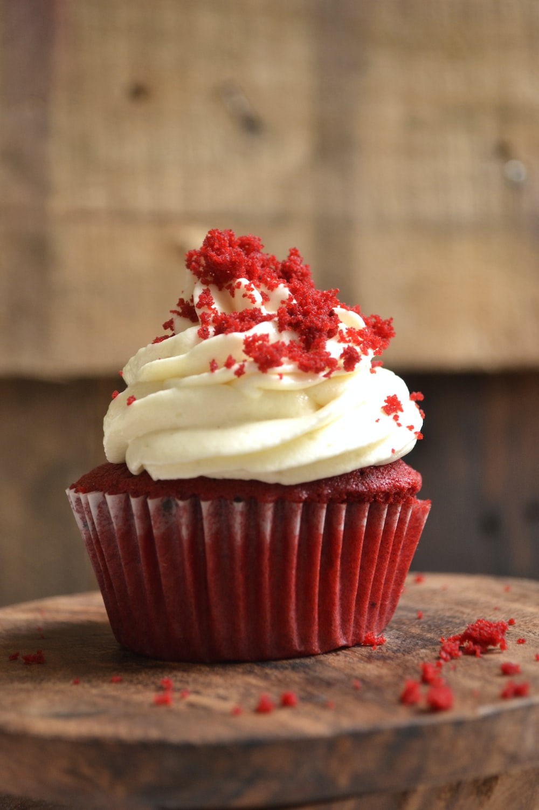

Cupcake Recipe
back to home

Description of the cookies:
These cupcakes are a simple and delicious treat that are quick to make. With just five ingredients, they come together in no time. The vanilla cake mix serves as the base, providing a light and fluffy texture. The addition of milk adds moisture and richness, while the melted butter contributes to a tender crumb. The eggs help bind the ingredients together and give the cupcakes structure. Finally, the vanilla extract enhances the flavor and adds a delightful aroma. Once baked, these cupcakes have a golden exterior and a moist, tender interior. They are versatile and can be frosted with your favorite frosting or decorated to suit any occasion. Enjoy these delightful cupcakes as a sweet indulgence for birthdays, parties, or simply as a treat to brighten your day.
Ingredient List
- 1 box of vanilla cake mix
- 1 cup milk
- 1/2 cup unsalted butter, melted
- 3 large eggs
- 1 teaspoon vanilla extract
Steps
- Preheat your oven to the temperature specified on the cake mix box. Line a cupcake pan with paper liners and set it aside.
- In a large mixing bowl, combine the vanilla cake mix, milk, melted butter, eggs, and vanilla extract. Use an electric mixer to beat the ingredients together on medium speed until well combined and smooth.
- Divide the batter evenly among the cupcake liners, filling each one about two-thirds full.
- Place the cupcake pan in the preheated oven and bake according to the instructions on the cake mix box or until a toothpick inserted into the center of a cupcake comes out clean.
- Once baked, remove the cupcakes from the oven and let them cool in the pan for a few minutes. Then transfer them to a wire rack to cool completely before frosting or decorating as desired.